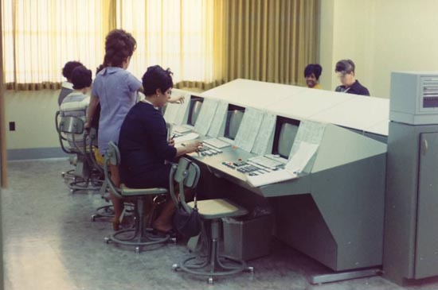
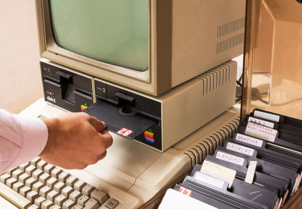
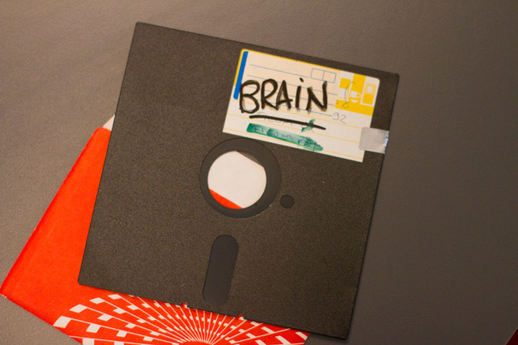

Los virus informáticos son tan viejos como las propias computadoras. Comenzaron a desarrollarse, con fines de investigación, en la década de 1960. Lamentablemente con el paso de los años, su función cambió, convirtiéndose en la pesadilla de muchos.
 En realidad, Core War no fue un virus informático, sino más bien un juego mediante el cual se propagó uno de los primeros software con características maliciosas que afectaba la memoria de las computadoras y podía auto replicarse. Este juego fue desarrollado por un grupo de programadores de la compañía Bell Computer, quienes en la década del 60 crearon una sencilla aplicación que competía con el resto de los programas que se ejecutaban en una computadora con el fin de obtener el control absoluto de la memoria del equipo.
A pesar de que Core War seguramente marcó el comienzo de la era de los virus informáticos, lo cierto es que el famoso Creeper fue el primer virus que incluía las
características típicas de un verdadero malware.
Creeper fue creado por Bob Thomas en el año 1971, y fue especialmente escrito para atacar al sistema operativo Tenex.
Cuando Creeper llegaba a una computadora, por lo general por intermedio de los nodos de la ARPANET, el malware se
autoejecutaba comenzaba a mostrar el siguiente
mensaje: "I'm the Creeper, catch me if you can!", que en español sería algo así como "Soy la enredadera, atrápame si puedes!".
Después de varios estragos por parte de Creeper, que dejó varias computadoras en de su uso temporal, como forma de terminar con este malware surgió otro virus denominado Reaper, el cual se propagaba a través de la red en busca de las computadoras infectadas con Creeper para eliminarlo. De esta manera, la historia de la computación y la informática presenciaba el nacimiento del primer antivirus, ya que a pesar de haber sido diseñado con características de malware, Reaper cumplió en definitiva una función de antídoto, ante la propagación de Creeper.
 Continuando con la historia de los virus informáticos, y como mencionábamos en la década de los ochenta se produjo el verdadero furor por estas aplicaciones maliciosas que se propagaban computadora a computadora sembrando diferentes problemas en el funcionamiento de los equipos que eran infectados. Fue en el año 1985 cuando comenzaron a aparecer los primeros caballos de Troya o Troyanos, los cuales por lo general se presentaban disfrazados, por un lado el virus que se escondía bajo una imagen de programa de mejora de gráficos llamado EGABTR, y por el otro el famoso juego llamado NUKE-LA. Con el paso de los meses, cada vez fueron más los virus que comenzaron a propagarse en el universo informático, siendo éstos cada vez más complejos. Pero fue el llamado Brain el primer virus que provocó mayores infecciones en la época, el cual comenzó a circular en el año 1986, y para 1987 había logrado extenderse por todo el mundo.
 En el año 1986 llegó el que fue considerado el primer virus masivo de la historia de la informática, ya que el denominado Brain había sido
escrito para atacar el sistema MS-DOS y era totalmente compatible con IBM PC.
Fue creado por un grupo de amigos oriundos de la ciudad de Lahore, Paquistán, quienes se encargaron de distribuirlo vendiendo copias del mismo insertadas en
diskettes pirateados de programas cComerciales.
Entre los que se encontraban los populares Lotus, SuperCalc y Wordstar. De esta manera, Brain llegó rápidamente a los Estados Unidos, donde se infectaron más de
20.000 computadoras en pocos meses.
Como cada cosa en el mundo tieneun principio pues estos fueron los inicios de los virus informatica.
Historia de los virus